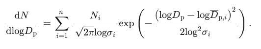

Background
Context & Motivation
The lack of knowledge and awareness of poor indoor air quality presents significant challenges in identifying/mitigating potential health risks. Many environments may contain harmful pollutants, allergens, and volatile organic compounds (VOCs) that go unnoticed, which can lead to long-term exposure and adverse health effects.
According to a 2021 study published by the Institute for Health Metrics and Evaluation (IHME), particulate matter ranks as the first health risk factor among 88 considered.
Death-adjusted life years (DALYs) for a disease are the sum
of years of life lost due to premature mortality (YLLs), and years lived with a disability (YLDs).
This demonstrates that the top health risk is within an individual's control. It is simply a matter of tracking and managing exposure.
Week 1 - 09/16/2024
Problem Statement
Design and prototype a low-cost indoor air quality sensing solution that can accurately provide live data and long-term air quality trends to the public through website & mobile application formats.
Week 2 - 09/23/2024
Constraints
• Total cost per sensor: $100 max
• Sensor size must not exceed 6x6x2in
• Weight: 1.5lbs (0.7kg)
• Must meet RESET standards:
o PM2.5: +/- 5% ug
o TVOC: +/- 15% ppb
o CO2: +/- 5% ppm
o Temperature: +/- 1 degree
o Humidity: +/- 5% RH
Criteria
• Volume of indoor air measured/time
• Length of battery life (power usage)
• Ease of installation/setup
• Durability & longevity
Week 3 - 09/30/2024
Solutions & Patents
Solutions
1. Fixed sensors mounted within indoor public spaces

2. Personal air quality sensor for individual use

3. Portable air quality sensor for indoor public spaces
4. Mobile robot that maps indoor spaces and collect data across facility
Patents
Implementation of Air Quality Sensor Network
- Networked air quality monitoring system
- Smart-home multi-functional hazard detector providing location-specific feature configuration
- Integrated air quality sensor that detects multiply gas species
Air Quality Sensor Design
Week 4 - 10/07/2024
Solution Selection
Week 8 - 11/04/2024
Detailed Design Overview
Mechanical


Electrical

Software
Database
App Development
Week 9 - 11/11/2024
Design Verification
PM/Project Updates
- Initial prototyping components have been ordered
- Picked up some supporting equipment from MME lab
- Gained access to air pollution lab on campus under Prof Robert Nishida
Mechanical
Source: OPCSIM, Hagan, 2020
An aerosol distribution can be described as the sum of n lognormal distributions according to the formula
where Ni is the number concentration, Dpi is the median particle diameter (Geometric mean), and sigma_i is the standard deviation.
Parameters of interest:
- (1) Wavelength of the laser
- (2) Viewing angle of scattered light
- (3) Number of discrete bins and their widths
Mie theory calculations are referenced from Light Scattering, Bohren, 1983

where lambda is wavelength of laser, theta is viewing angle, and i is the intensity distribution function
Based on the parameters of interest and this theory, a calibration curve is generated which defines specific bin ranges with estimated Cscat (scattering area per particle)
To summarize, a particle crosses the laser which generates a scattering amplitude which is associated with a specific "bin" via the calibration curve. This then allows us to classify the measurement as a specific particle diameter based on the physics model.
Firmware
In the Thread mesh network topology, the sensor modules function as end devices, repsonsible for collecting air quality data. These end devices transmit their data to router nodes or a border router, which facilitate communication across the mesh network and relay the data to the appropriate destinations.

The image below shows two terminal windows: the left simulating the leader in a Thread network and the right emulating an end device attempting to join. After some setup commands, we successfully connected the two simulated notes.
Week 11 - 11/25/2024
Final Design Presentation
Week 12 - 12/02/2024
Final Report due
Week 18 - 01/14/2025
Initial Meeting with Professors
- Rev 01 Enclosures have been 3D printed
- Rev 01 Protoboard circuit has been soldered
Week 19 - 01/20/2025
Circuit Prototyping
- Tried using a simple voltage divider [prototyped in TinkerCAD]
- Not sensitive enough to small variations in light

Week 20 - 01/27/2025
Circuit Prototyping
- Built a transimpedance amplification circuit in TinkerCAD
- Replicated on breadboard
Week 21 - 02/03/2025
Circuit Prototyping
- Replicated circuit above on perfboard [PCB 1]
- Integrated into device enclosure
- Soldered headers on to PCB2
Week 22 - 02/10/2025
Meeting #2 with Professors
Prototype
- ✓ Test photosensor integrated into circuit with laser diode
- ✓ Read from transimpedance amplifier on ESP32
- ✓ Plot ADC data -> noticed some spikes in readings over time [23 in a minute]
- ✓ Validate with calculations -> it appears to fall within typical indoor PM concentrations
- Test alongside high-end PM sensors in coming weeks to test sensor accuracy
Sensor Network
- ✓ End device is able to send data to border router, only non-confirmation messages, still have issues responding from border router
- ✓ Try to get border router to start itself on boot [ifconfig and thread start]
- ✓ Connect border router to wifi on boot
- Send json in http to computer
- Parse coap message received on border router, send via http to a computer
Database
- ✓ APIs have been created in spreadsheet, and successfully send data to app
- ✓ Able to add data to database using API [simulates real transfer of data]
- Translate database from current site to GCP
- Add remaining APIs
App Development
- ✓ All four pages have been created
- ✓ Sample data from database has been pulled to app from APIs
- Further work on data organization and communication in progress
Week 25 - 03/04/2025
System Integration
Soldered main PCB and assembled first prototype.

Week 22 - 03/11/2025
Final Demo

Project Demo
- © Airborne